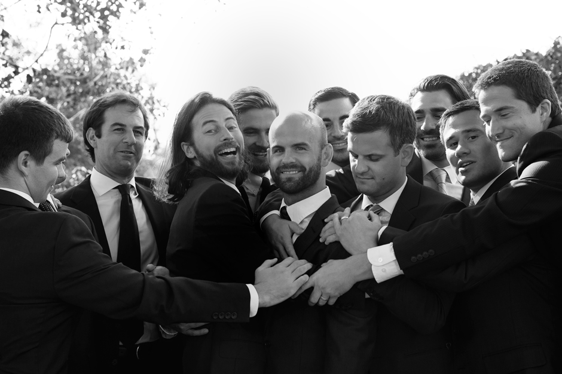
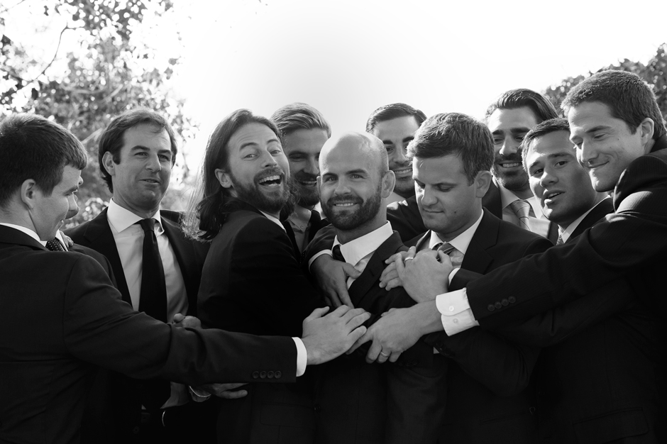
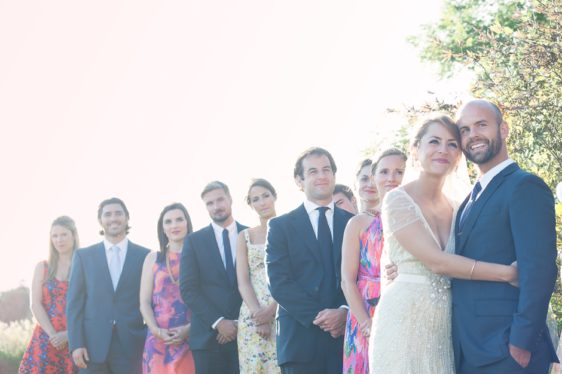
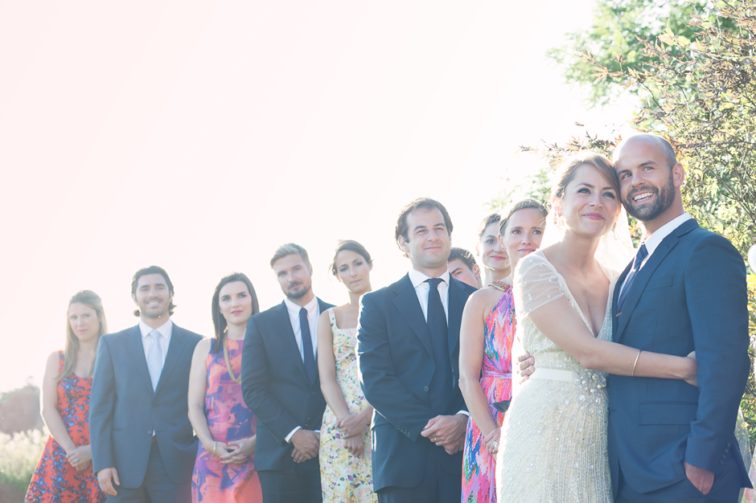

sarah + mike's backyard hamptons wedding
With the festivities hosted at the bride's lakeside family home, it was hard to not fall for the immediate warmth and excitement that abounded. Sarah and Mike said their vows at sunset, surrounded by friends, family, and an atmosphere of radiant joy. The bride's friends made each table's centerpiece, while her mom and aunts made hors d'oeuvres, appetizers, and dessert. My favorite part? It's a tie between the glowy sunset portraits after the ceremony and the amazing dance party that raged till the wee hours under a massive tent. Congratulations, Sarah and Mike!
[Images shot while assisting Levi Stolove. Thanks, Levi!]


 

 
